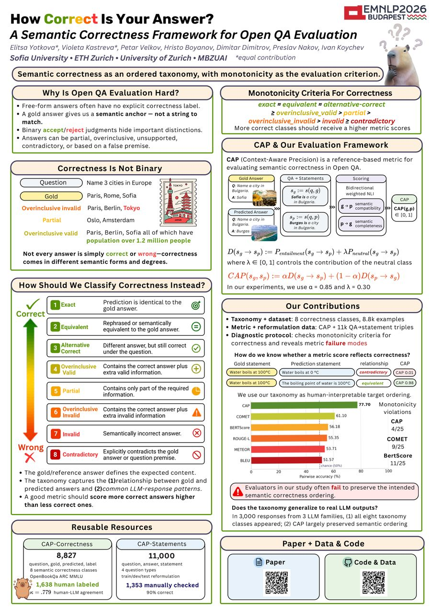

Why Is Open QA Evaluation Hard?
- Free-form answers often have no explicit correctness label.
- A gold answer gives us a semantic anchor, not a string to match.
- Binary accept/reject judgments hide important distinctions.
- Answers can be partial, overinclusive, unsupported, contradictory, or based on a false premise.
Correctness Is Not Binary
Not every answer is simply correct or wrong. Correctness comes in different semantic forms and degrees.
How Should We Classify Correctness Instead?
- The gold/reference answer defines the expected content.
- The taxonomy captures (1) the relationship between gold and predicted answers and (2) common LLM-response patterns.
- A good metric should score more correct answers higher than less correct ones.
Monotonicity Criteria for Correctness
exact ≈ equivalent ≈ alternative-correct
≥ overinclusive_valid
> partial
>
overinclusive_invalid
> invalid
≥ contradictory
More correct classes should receive higher metric scores.
CAP & Our Evaluation Framework
CAP (Context-Aware Precision) is a reference-based metric for evaluating semantic correctness in open QA.
A: Sofia
A: Burgas
weighted NLI
∈ [0, 1]
where \(\lambda \in [0, 1]\) controls the contribution of the neutral class
In our experiments, we use \(\alpha = 0.85\) and \(\lambda = 0.30\).
Our Contributions
- Taxonomy + dataset: 8 correctness classes, 8.8k examples
- Metric + reformulation data: CAP + 11k QA→statement triples
- Diagnostic protocol: checks monotonicity criteria for correctness and reveals metric failure modes
How do we know whether a metric score reflects correctness?
We use our taxonomy as a human-interpretable target ordering.
Pairwise accuracy (%)
Monotonicity violations
Does the taxonomy generalize to real LLM outputs?
In 3,000 responses from 3 LLM families, (1) all eight taxonomy classes appeared, and (2) CAP largely preserved the semantic ordering.
Reusable Resources
question, gold, predicted, label
8 semantic correctness classes
OpenBookQA, ARC, MMLU
κ = .779 human–LLM agreement
question, answer, statement
4 question types
train/dev/test reformulation
90% correct
Use CAP
pip install -e . from cap_eval import CAPScorer scorer = CAPScorer() # cross-encoder/nli-deberta-v3-large, pinned revision scorer.score( ["The powerhouse of the cell is the mitochondria."], # premises (gold) ["The mitochondria is the powerhouse of the cell."], # hypotheses (candidate) )
See the repository for scoring raw (question, gold answer, answer) triples and for reproducing the results.
Poster

The full poster from EMNLP 2026 in Budapest.
Open the poster (PDF)Citation
@inproceedings{yotkova2026correct,
title = {How Correct Is Your Answer? A Semantic Correctness Framework for Open {QA} Evaluation},
author = {Yotkova, Elitsa and Kastreva, Violeta and Velkov, Petar and Boyanov, Hristo and
Dimitrov, Dimitar and Nakov, Preslav and Koychev, Ivan},
booktitle = {Findings of the Association for Computational Linguistics: EMNLP 2026},
year = {2026},
url = {https://arxiv.org/abs/2609.01369}
}